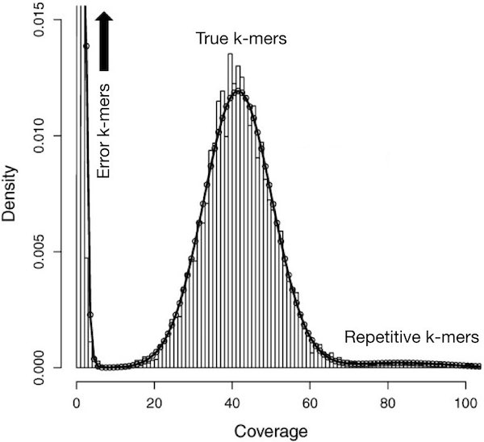

Part 1: Introduction To Genomic Data & Read Cleaning
1. Introduction
Cheap sequencing has created the opportunity to perform molecular-genetic analyses on almost anything! Traditional model organisms including C. elegans, S. cerevisiae (Yeast) & D. melanogaster (Fruit Fly) to name a few, benefited from years of efforts by expert genome assemblers, gene predictors, and curators. They have created most of the prerequisites for genomic analyses.
In contrast, genomic resources are much more limited for those working on "emerging" model organisms or other species. These new organisms include most crops, animals and plant pest species, many pathogens, and major models for ecology & evolution.
The steps below are meant to provide some ideas that can help obtaining a reference genome and geneset of sufficient quality for many analyses. They are based on worked performed by the Wurm Lab who assembled the fire ant genome [1].
In this pratical, the dataset you will use represents ~0.5% of the fire ant genome. This enables us to perform a toy/sandbox version of all analyses within a much shorter time than would normally be required.
During this series of practicals, we will:
- Inspect and clean short (Illumina) reads,
- Perform genome assemble using our 'cleaned' data.
- Assess the quality of our genome assembly.
- Identify protein-coding genes within our assembly.
- Assess the quality of gene predictions.
- Assess the quality of the entire process using a biologically meaningful measure.
Note: Please do not jump ahead. You will gain the most by following through each section of the practical one by one. If you're fast, dig deeper into particular aspects. Dozens of approaches and tools exist for each step - try to understand their tradeoffs.
2. How to use this website!
As you move through sections chronologically you will see some parts which are labelled acrcording to its intended purpose below:
General text
Text which does not have any special formatting and looks (plain) like this will guide you through the practicals, providing background and explaining what anlyses we are performing, and why.
Information and tips
Info
Text which appears in boxes of this colour aims to inform you of important information.
Task
Task
These boxes indicate there is something for you need to do!
Code
Text which appears in boxes of this colour will tell that you are looking at a terminal command.
You can copy and paste from here straight to the terminal but before you do take a moment to understand what the command is actually doing.
Several command lines may be present, with each new line representing a single command.
Code windows are scrollable (horizontal & verticle)
Terminal output
Terminal output
Text appearing in these boxes represents output you might expect to see in the terminal in response to a command.
Check to see if you get a similar output!
Terminal windows are scrollable (horizontal & verticle)
Questions
Question
Text in these boxes will usually ask an open ended question. If you cannot think of an answer or you want to check you have the right one, do not hesitate to ask one of the demonstrators for help!
Question
Text in these boxes will ask a specific question. To reveal the answer select the 'Answer' tab.
Here you will find the answer!
Thats it! You are now ready to progress with the pratical! If you have any questions don't hesitate to ask one of the demonstrators for help. Good luck!
3. Software and environment setup
Test that the necessary bioinformatics software is available
Task
In the terminal run seqtk.
The output of this command should look like this:
Terminal output
Usage: seqtk <command> <arguments>
Version: 1.4-r132-dirty
Command: seq common transformation of FASTA/Q
size report the number sequences and bases
comp get the nucleotide composition of FASTA/Q
sample subsample sequences
subseq extract subsequences from FASTA/Q
fqchk fastq QC (base/quality summary)
mergepe interleave two PE FASTA/Q files
split split one file into multiple smaller files
trimfq trim FASTQ using the Phred algorithm
If you obtained a similar output move onto the next section!
However, if you terminal output produces an error (like below), please ask a demonstrator for help!
Terminal output
command not found
Set up directory hierarchy to work in
Now we will start by creating a directory (folder) to work in!
Drawing on ideas from Noble (2009)[2] and others, we recommend following a specific directory convention for all your projects. The details of the convention that we will use in this practical can be found here. For the purpose of this practical we will use a slightly simplified version of this structure which is now explained below.
For each practical, you will have to create the following directory structure:
- A main directory in your home directory in the format
(
YYYY-MM-DD-name_of_the_practical, whereYYYYis the current year,MMis the current month, andDDis the current day, andname_of_the_practicalmatches the practical). For instance, on the 22nd of September 2025, you should create the directory2025-09-22-read_cleaningfor this practical. - Inside this directory, create other three directories, called
input,tmp, andresults. - The directory
inputwill contain the FASTQ files. - The directory
tmpwill represent your working directory. - The directory
resultswill contain a copy of the final results.
Task
Now lets create the directory structure required for this practical!
The command you will need is:
mkdir 2025-09-22-read_cleaning
Now, see if you can make the necessary input, tmp and results subdirectories on your own!
Info
Each directory in which you have done something should include a WHATIDID.txt file in which you log your commands.
Being disciplined about structuring analyses is extremely important. It is similar to having a laboratory notebook. It will prevent you from becoming overwhelmed by having too many files, or not remembering what you did where.
Task
To create our WHATIDID.txt file we can use the following command:
touch ./2025-09-22-read_cleaning/WHATIDID.txt
The to inspect the directory structure you have created you can run:
tree ./2025-09-22-read_cleaning
The expected terminal output is highlighted below
Terminal
2025-09-22-read_cleaning
├── input
├── tmp
├── results
└── WHATIDID.txt
4. Sequencing an appropriate sample
The properties of your data can affect the ability of bioinformatics algorithms to handle them. For instance, less diversity and complexity in a sample makes life easier: assembly algorithms really struggle when given similar sequences. So less heterozygosity and fewer repeats are easier.
Thus:
- A haploid is easier than a diploid (those of us working on haplo-diploid Hymenoptera have it easy because male ants are haploid).
- It goes without saying that a diploid is easier than a tetraploid!
- An inbred line or strain is easier than a wild-type.
- A more compact genome (with less repetitive DNA) is easier than one full of repeats - sorry, grasshopper & tick researchers! ;)
Many considerations go into the appropriate experimental design and sequencing strategy. We will not formally cover those here as this is a simple introduction and instead jump right into getting hands on with our data!
5. Illumina short-read cleaning
In this practical, we will work with paired ends short read sequences from an Illumina machine. Each piece of DNA was thus sequenced once from the 5' and once from the 3' end. Thus, we expect to have two files per sequence.
However, sequencers aren't perfect. Several problems may affect the quality of the reads. You can find some examples here and here.
Also, as you may already know, "garbage in – garbage out", which means that reads should be cleaned before performing any analysis.
Setup and initial inspection using FastQC
Lets move to the main directory for this practical, so that everything we need and do and create is in one place:
Task
# Remember that yours may have a different date, now or in future, so be careful to check if you copy-paste code
cd ~/2025-09-22-read_cleaning
After, create a symbolic link (or symlink) using ln -s from the reads files to the
input directory us the commands below:
# Change directory to input
cd input
# Link the two compressed FASTQ files (remember that each correspond to one of
# the pair)
ln -s /shared/data/reads.pe1.fastq.gz .
ln -s /shared/data/reads.pe2.fastq.gz .
# Return to the main directory
cd ..
Now run the tree command to inspect your directory structure.
The structure of your directory should look like this:
Terminal
2025-09-22-read_cleaning
├── input
│ ├── reads.pe1.fastq.gz -> /shared/data/reads.pe1.fastq.gz
│ └── reads.pe2.fastq.gz -> /shared/data/reads.pe2.fastq.gz
├── tmp
├── results
└── WHATIDID.txt
Now, you can start evaluating the quality of the reads reads.pe1.fastq.gz and
reads.pe2.fastq.gz. To do so, we will use
FastQC
(documentation). FastQC is a bioinformatics software tool to help visualise the characteristics of a sequencing run. It can thus inform your read cleaning a.k.a your quality control strategy.
Task
Run FastQC on the reads.pe1.fastq.gz and reads.pe2.fastq.gz files.
The command is given below, where instead of YOUR_OUTDIR, you will need
replace YOUR_OUTDIR with the path to your tmp directory (e.g. if you main
directory is 2025-09-22-read_cleaning, you need to replace YOUR_OUTDIR with
tmp):
fastqc --nogroup --outdir YOUR_OUTDIR input/reads.pe1.fastq.gz
fastqc --nogroup --outdir YOUR_OUTDIR input/reads.pe2.fastq.gz
The --nogroup option ensures that bases are not grouped together in many of
the plots generated by FastQC. This makes it easier to interpret the output in
many cases. The --outdir option is there to help you clearly separate input
and output files. To learn more about these options run fastqc --help in the
terminal.
Important Note - Remember to log the commands you used in the WHATIDID.txt file. To do this you can use the text editors introduced in the UNIX practical including nano
Take a moment to verify your directory structure. You can do so using the tree
command (be aware of your current working directory using the command pwd):
tree ~/2025-09-22-read_cleaning
The resulting directory structure should look like this:
Terminal
2025-09-22-read_cleaning
├── input
│ ├── reads.pe1.fastq.gz -> /shared/data/reads.pe1.fastq.gz
│ └── reads.pe2.fastq.gz -> /shared/data/reads.pe2.fastq.gz
├── tmp
│ ├── reads.pe1_fastqc.html
│ ├── reads.pe1_fastqc.zip
│ ├── reads.pe2_fastqc.html
│ └── reads.pe2_fastqc.zip
├── results
└── WHATIDID.txt
If your directory and file structure looks different, ask for some help!
Inspecting FastQC Reports
Now lets inspect those FastQC report generated!
Task
First, copy the files reads.pe1_fastqc.html and
reads.pe2_fastqc.html to the directory ~/www/tmp. Then, open the browser and
go to your personal module page (e.g., if your QMUL username is bob, the
URL will be https://bob.genomicscourse.com) and click on the ~/www/tmp link. After
that, click on one of the links corresponding to the reports files.
Question
Question: What does the FastQC report tell you?
If in doubt, check the documentation here and what the quality scores mean here.
For comparison, have a look at some plots from other sequencing libraries: e.g, [1], [2], [3]. Note, the results for your sequences may look different.
![[1]](../../img/qc/per_base_quality.png){kind=link}
![[2]](../../img/qc/qc_factq_tile_sequence_quality.png){kind=link}
![[3]](../../img/qc/per_base_sequence_content.png){kind=link}
Question
Clearly, some sequences have very low quality bases towards the end. Why do you think that may be?
Question
Which FastQC plots shows the relationship between base quality and position in the sequence? What else does this plot tell you about nucleotide composition towards the end of the sequences?
Question
Should you maybe trim the sequences to remove low-quality ends? What else might you want to do?
In the following sections, we will perform two cleaning steps:
- Trimming the ends of sequence reads using cutadapt.
- K-mer filtering using the bioinformatics tool kmc3.
- Removing sequences that are of low quality or too short using cutadapt.
Other similar tools include fastx_toolkit, BBTools, and Trimmomatic however, we will not use them in this practical!
Read trimming
To clean the FASTQ sequences, we will use a software tool called cutadapt. As stated on the official website:
- Cutadapt finds and removes adapter sequences, primers, poly-A tails and other types of unwanted sequence from your high-throughput sequencing reads.
Specifically, we will use cutadapt to trim the sequences.
Question
What is the meaning of cutadapt options --cut and --quality-cutoff ?
(Hint: you can read a short description of the options by calling the
command cutadapt -h)
To identify relevant quality cutoffs, it is necessary to be familiar with base quality scores and examine the per-base quality score in your FastQC report.
We will run cutadapt with two options, --cut and/or --quality-cutoff,
corresponding to the number of nucleotides to trim from the beginning (--cut)
and end (--quality-cutoff) of the sequences.
Info
Note:
If you trim too much of your sequence (i.e., too large values for --cut and
--quality-cutoff), you increase the likelihood of eliminating important
information. Additionally, if the trimming is too aggressive, some sequences
may be discarded completely, which will cause problems in the subsequent
steps of the pre-processing. For this example, we suggest to keep --cut below 5 and --quality-cutoff below 10.
Task
The command to run cutadapt on the two reads files is reported below, where
BEGINNING and CUTOFF are the the two integer values corresponding to the
number of bases to trim from the beginning of the sequence and the quality
threshold (see the above info note for suggestion about the values to use).
Remember that each .fq file can have a different set of values.
cd ~/2025-09-22-read_cleaning
cutadapt --cut BEGINNING --quality-cutoff CUTOFF input/reads.pe1.fastq.gz > tmp/reads.pe1.trimmed.fq
cutadapt --cut BEGINNING --quality-cutoff CUTOFF input/reads.pe2.fastq.gz > tmp/reads.pe2.trimmed.fq
6. K-mer filtering, removal of short sequences
Let's suppose that you have sequenced your sample at 45x genome coverage. This means that every nucleotide of the genome was sequenced 45 times on average. So, for a genome of 100,000,000 nucleotides, you expect to have about 4,500,000,000 nucleotides of raw sequence. But that coverage will not be homogeneous. Instead, the real coverage distribution will be influenced by factors including DNA quality, library preparation type, how was DNA packaged within the chromosomes (e.g., hetero vs. euchromatin) and local GC content. But you might expect most of the genome to be covered between 20 and 70x.
In practice, this distribution can be very strange. One way of rapidly examining the coverage distribution before you have a reference genome is to chop your raw sequence reads into short "k-mers" of k nucleotides long, and estimate the frequency of occurrence of all k-mers. An example plot of k-mer frequencies from a haploid sample sequenced at ~45x coverage is shown below:

In the above plot, the y axis represents the proportion of k-mers in the dataset that are observed x times (called Coverage). As, expected, we observe a peak in the region close to 45, which corresponds to the targeted coverage.
However, we also see that a large fraction of sequences have a very low coverage (they are found only 10 times or less).
These rare k-mers are likely to be errors that appeared during library preparation or sequencing, or could be rare somatic mutations. Analogously (although not shown in the above plot) other k-mers may exist at very large coverage (up to 10,000). These could be viruses or other pathogens, or highly repetitive parts of the genome, such as transposable elements or simple repeats.
Info
Note: Extremely rare and extremely frequent sequences can both confuse assembly algorithms. Eliminating them can reduce subsequent memory, disk space and CPU requirements considerably, making overall computing more efficient and friendly.
Below, we use kmc3 to "mask" extremely rare k-mers (i.e., convert each base in the sequences corresponding to rare k-mers into N). In this way, we will ignore these bases (those called N) because they are not really present in the species. Multiple alternative approaches for k-mer filtering exist (e.g., using khmer).
Here, we use kmc3 to estimate the coverage of k-mers with a size of 21 nucleotides. When the masked k-mers are located at the end of the reads, we trim them in a subsequent step using cutadapt. If the masked k-mers are in the middle of the reads, we leave them just masked. Trimming reads (either masked k-mers or low quality ends in the previous step) can cause some reads to become too short to be informative. We remove such reads in the same step using cutadapt. Finally, discarding reads (because they are too short) can cause the corresponding read of the pair to become "unpaired". While it is possible to capture and use unpaired reads, we skip that here for simplicity. Understanding the exact commands – which are a bit convoluted – is unnecessary. However, it is important to understand the concept of k-mer filtering and the reasoning behind each step.
Task
To mask rare k-mers we will first build a k-mer database that includes counts for each k-mer. For this, we first make a list of files to input to KMC.
ls tmp/reads.pe1.trimmed.fq tmp/reads.pe2.trimmed.fq > tmp/file_list_for_kmc
Build a k-mer database using k-mer size of 21 nucleotides (-k). This will
produce two files in your tmp/ directory: ./tmp/21-mers.kmc_pre and ./tmp/21-mers.kmc_suf. The last argument (tmp) tells kmc where to put intermediate files during computation; these are automatically deleted afterwards. The -m option tells
KMC to use only 4 GB of RAM.
kmc -m4 -k21 @tmp/file_list_for_kmc tmp/21-mers tmp
Mask k-mers (-hm) observed less than two times (-ci) in the database (tmp/21-mers). The -t option tells KMC to run in single-threaded mode: this is required to preserve the order of the reads in the file. filter is a sub-command of kmc_tools that has options to mask, trim, or discard reads contain extremely rare k-mers.
Note: kmc_tools command may take a few seconds to complete and does not provide any visual feedback during the process.
kmc_tools -t1 filter -hm tmp/21-mers tmp/reads.pe1.trimmed.fq -ci2 tmp/reads.pe1.trimmed.norare.fq
kmc_tools -t1 filter -hm tmp/21-mers tmp/reads.pe2.trimmed.fq -ci2 tmp/reads.pe2.trimmed.norare.fq
Check if unpaired reads are present in the files
cutadapt -o /dev/null -p /dev/null tmp/reads.pe1.trimmed.norare.fq tmp/reads.pe2.trimmed.norare.fq
Trim 'N's from the ends of the reads, then discard reads shorter than 21 bp, and save remaining reads to the paths specified by -o and -p options. The -p option ensures that only paired reads are saved (an error is raised if unpaired reads are found).
cutadapt --trim-n --minimum-length 21 -o tmp/reads.pe1.clean.fq -p tmp/reads.pe2.clean.fq tmp/reads.pe1.trimmed.norare.fq tmp/reads.pe2.trimmed.norare.fq
Finally, we can copy over the cleaned reads to results directory for further analysis
cp tmp/reads.pe1.clean.fq tmp/reads.pe2.clean.fq results
Inspecting quality of cleaned reads
Now we have cleaned our reads, lets have a look at how the 'cleaned' file is different from the original!
Question
Which percentage of reads have we removed overall? (hint: wc -l can count lines in a non-gzipped file).
If you have time, maybe rerun FastQC on the cleaned data and inspect the output!
7. References
-
Wurm, Y., Wang, J., Riba-Grognuz, O., Corona, M., Nygaard, S., Hunt, B.G., Ingram, K.K., Falquet, L., Nipitwattanaphon, M., Gotzek, D. and Dijkstra, M.B., 2011. The genome of the fire ant Solenopsis invicta. Proceedings of the 2012. National Academy of Sciences, 108(14), pp.5679-5684.
-
Noble, W.S., 2009. A quick guide to organizing computational biology projects. PLoS computational biology, 5(7), p.e1000424.
8. Further reading
-
MARTIN Marcel. Cutadapt removes adapter sequences from high-throughput sequencing reads. EMBnet.journal, [S.l.], v. 17, n. 1, p. pp. 10-12, may 2011. ISSN 2226-6089. doi: https://doi.org/10.14806/ej.17.1.200.
-
Kokot, M., Długosz, M. and Deorowicz, S., 2017. KMC 3: counting and manipulating k-mer statistics. Bioinformatics, 33(17), pp.2759-2761.
9. Bonus questions if you're done early
Question
- Which read cleaners exist and are the most popular today?
- Which read cleaners would you use for Illumina data? Why?
- Which read cleaners would you use for long-read data? Why?
- Can having an existing genome assembly help with read cleaning? How?